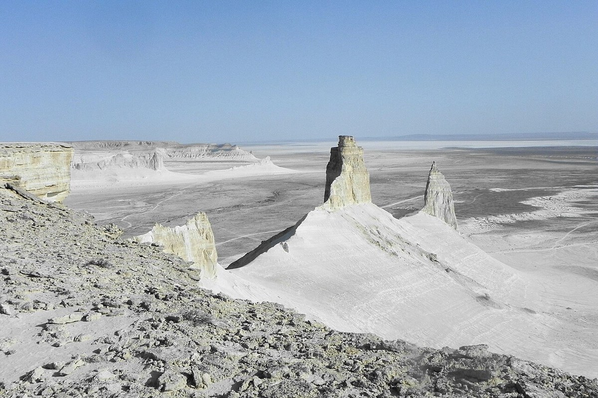

Part 3 / DOM Manipulation with jQuery
Task 6. Modifying Attributes
Change an image source and a link destination dynamically.

Berdibek MeiirbekSE-2528
Part 3 / DOM Manipulation with jQuery
Change an image source and a link destination dynamically.
